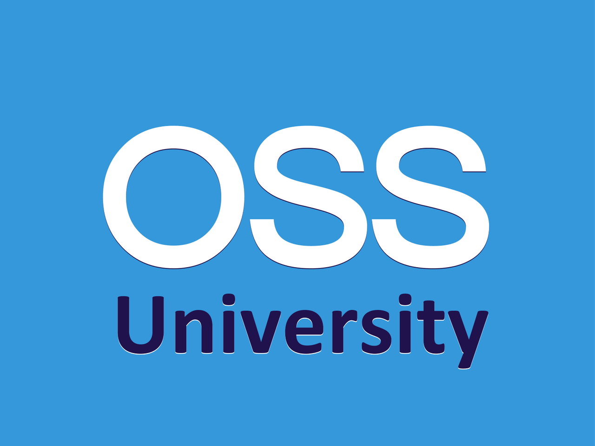

OSS University Path
Sadly I have no solid background in CS. There were few CS-related courses in the University (C++, Optimisation, math and so on), but the major part of my expertise comes from the experience. My field knowledge is pretty broad, but it is shallow in some places (in a lot of places) and has big holes here and there. That is why I really hope Open Source Society University initiative will help me build vast and complete CS "base".

What is Open Source Society University?
Open Source Society University:
This is a solid path for those of you who want to complete a Computer Science course on your own time, for free, with courses from the best universities in the World. In our curriculum, we gave preference to MOOC (Massive Open Online Course) style courses because those courses were created with our style of learning in mind.
So we have some kind of well known JavaScript Path, but in the broad field of Computer Science. There is a long list of MOOCs, one also should build projects after each course.
My Plans
I consider January as a good start point for OSS University path. So, let's do it. I'll track my progress and post status here. The first course is basic - Introduction to Computer Science by edX, nevertheless I does not plan to skip it. With me patience = )